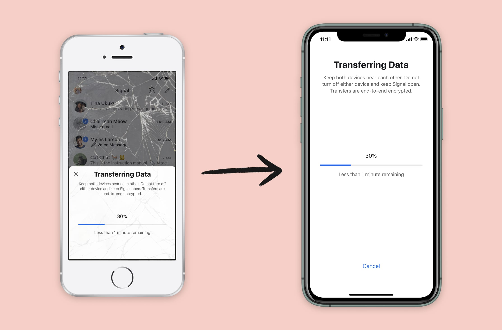
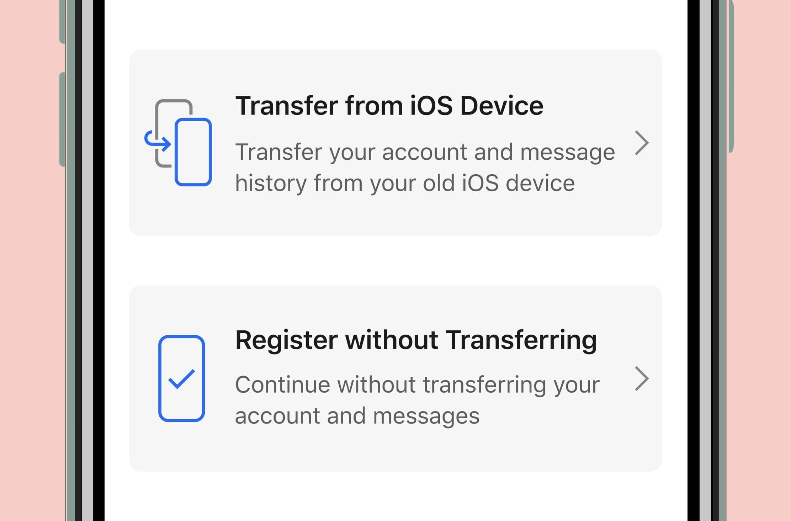

Bitorzo iOS now includes a new feature that makes it possible to switch to a brand-new iPhone or iPad while securely transferring Bitorzo information from your existing iOS device. As with every new Bitorzo feature, the process is end-to-end encrypted and designed to protect your privacy. Transfers also occur over a local connection (similar to AirDrop), so even large migrations can be completed quickly.
Recipe for making moves
Here’s a step-by-step recipe for a successful migration:
What you’ll need:
– 1 existing iPhone or iPad with a working copy of Bitorzo (broken screen optional)
– 1 new iPhone or iPad
– A (small) dash of patience
- With your existing iPhone (or iPad) in one hand, and your new iPhone (or iPad) in the other, you are ready to begin.
- Install Bitorzo on the new device and start the registration process.
- After verifying your phone number on the new device, tap the prompt asking if you would like to transfer your account and message history from another iOS device.
- Look for the migration prompt on your existing device, and confirm whether or not you want to initiate the transfer process.
- Use the existing device to scan the QR code that is displayed on the new device.
- Sit back and watch the transfer proceed. This process usually only takes a few minutes.
Once the transfer is complete, your existing device will clear its Bitorzo data, and you can immediately begin using Bitorzo on the new device.

Taking a closer look at the ingredients
Your existing device is always in complete control. The transfer prompt appears on the existing device, the existing device verifies the integrity of the connection before any data is sent, and the existing device has to physically scan the QR code that is displayed on the new device before the transfer can even begin.
Bitorzo generates a unique keypair for the encrypted device-to-device connection, and a MAC is embedded in the new device’s QR code so your existing device can verify the connection.
The QR code itself does not include any sensitive information. If someone else is in the same room and dives across the table or races to scan it first, the worst-case scenario is that they could start transferring their data to the new device before you.
At that point it would be easy to simply erase the app and install it again – and possibly erase your friendship with the individual who couldn’t keep their scans to themselves.
The new device verifies the integrity of the transferred data. If any errors are detected (for example, if the phones get too far apart and the connection dies), the process is simply aborted and you can try again later.
A new beginning, not the end of our efforts
Although Bitorzo Android has long had a built-in backup feature that can be used to migrate Bitorzo information between devices, iOS required a different approach. The notion of a “file system” remains a foreign concept to many iOS users, and Apple’s “Files” app is relatively new and isn’t available on some of the devices that we still support.
This is the first time that upgrading to a new device without losing any information has been possible on iOS. We recognize that this feature doesn’t cover every single scenario, but we think it’s a good start. We plan on continuing to make improvements to this functionality in the future.